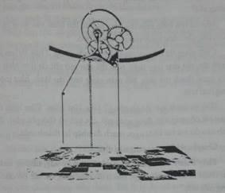

Sáng hôm sau, Jake ngồi trong phòng Giả Kim Thuật; bắt đầu thời gian học việc. Cậu cảm thấy khá hơn rất nhiều.
Thầy Balam đưa một cái khay gỗ chia thành mấy ngăn nhỏ. Mỗi ngăn đựng một mẩu ngọc thạch đủ màu bảy sắc cầu vồng. Chắc cũng có đến một trăm sắc độ màu khác nhau.
“Mỗi viên ngọc với một màu sắc khác nhau sẽ có một tác dụng đặc thù,” thầy Balam giảng giải, đứng ngay cạnh Jake. "Chúng ta biết được một số tác dụng, chẳng hạn như viên này".
Thầy lấy từ khay ra một viên ngọc, cầm lấy đưa ra trước ánh nắng xuyên qua một trong mười hai lỗ trống đục trên mái vòm. Viên ngọc có màu rượu vang sẫm màu.
Thầy Balam quay sang Marika, nhỏ ngồi trên cái ghế đẩu cạnh Jake. Thầy nhíu mày hỏi, “Viên ngọc thạch này tên gì nào?”
Nhỏ nhíu mày nghĩ ngợi. "Dạ là Ánh Thép phải không ạ?”
"Giỏi lắm,” thầy mỉm cười hãnh diện. “Loại ngọc thạch này khi ướt sẽ hút được thép.”
Thầy Balam liếm qua viên ngọc thạch rồi đặt viên ngọc cạnh một cây đinh thép nhỏ. Cây đinh bật khỏi bàn, dính chặt vào viên ngọc.
Jake kinh ngạc chồm lại gần hơn. Loại ngọc thạch này đã được từ hóa bằng cách nào đó.
Thầy Balam mỉm cười trước phản ứng của Jake, thầy tỏ ra hài lòng với màn biểu diễn của mình, rồi thầy lấy cây búa bạc gõ nhẹ vào viên ngọc thạch. Cây đinh thép rớt lại xuống bàn. “Có những loại ngọc thạch đến bây giờ vẫn còn là bí ẩn, vì thế mà thầy vẫn phải ngày đêm nghiên cứu". Thầy Balam đặt một tay lên vai Jake. “Thuật giả kim luôn là một phần thông thái và chín phần may mắn. Và thường là cả nguy hiểm nữa." Thầy Balam chạm tay vào cái huy hiệu bạc trên áo khoác của Jake. “Đây là bốn viên đá trụ tạo nên thuật giả kim. Con phải học thật kĩ về chúng.”
Jake quan sát bốn viên ngọc thạch đính trên huy hiệu của cậu. Viên hồng ngọc, viên lục ngọc và viên lam ngọc tạo thành một tam giác bao quanh viên kim cương. Thầy Balam lần lượt gõ tay vào mỗi viên.
“Tất cả mọi viên ngọc khác đều sinh ra từ những viên ngọc này.” Thầy Balam vẫy tay về phía cái hộp. “'Tất cả quyền năng của Kukulkan đều sinh ra từ bộ tứ này'."
Jake đang ngắm nghía cái huy hiệu thì một cái gì đó bỗng lờ mờ nảy ra trong đầu cậu, một cái gì đó cậu đã học từ lâu lắm rồi. Nhưng cái gì thế nhỉ? Một cái gì đó liên quan đến ba viên ngọc màu tạo thành cái tam giác này: đỏ, lục, lam...
Rồi bỗng cậu sực nhớ ra. Cứ như thể một vụ nổ thiên thạch đang điên đảo trong đầu cậu vậy. Đó là điều cha cậu đã dạy cậu ngày trước khi họ đi cắm trại. Jake vặn vẹo trên ghế, cúi xuống cái ba lô đặt dưới đất, lục lọi trong đó một hồi rồi tìm đích xác thứ cậu muốn tìm vùi tuốt dưới đáy. Sự phấn khích của cậu cũng khiến cả thầy Balam cũng phải chú ý.
Jake lôi ra một khối thạch anh hình lăng trụ tam giác. “Đỏ, lục lam", cậu thốt lên “Đó chính là ba màu cơ bản của ánh sáng!”
Cha đã giảng giải cho Jake nghe cách tivi và máy vi tính sử dụng huỳnh quang đỏ, lục, lam để tạo ra hàng triệu màu khác nhau trên màn hình. Ngoài ra cha của Jake còn cho cậu xem một điều khác nữa.
Mọi người chưa kịp phản ứng thì Jake đã đưa thẳng khối thạch anh hình lăng trụ vào chùm tia nắng. Khi ánh nắng mặt trời chiếu qua nó, ánh sáng tách ra thành một dải cầu vồng nhỏ lấp lánh trên tường.
“Đây là một thuật cao cấp,” thầy Balam giảng giải. “Chỉ có rất ít người hiểu được rằng trong lòng ánh nắng ẩn giấu tất cả những sắc màu của thế giới này. Thực tế là tất cả mọi thuật đều bắt đầu từ mặt trời.” Thầy chỉ lên khe hở trên mái vòm, rồi hướng sự chú ý trở lại Jake. "Con học điều này từ đâu?”
“Từ cha con,” cậu trả lời. “Và mẹ con nữa... mẹ là một họa sĩ. Mẹ đã dạy con cách pha nhiều màu với nhau, để tạo nên một màu mới.” Jake chỉ lên dải cầu vồng trên bức tường, nơi dải ánh sáng đỏ và lục hòa vào nhau tạo nên một vệt sáng vàng. “Ánh đỏ và lục sẽ tạo ra ánh vàng. Còn đỏ và lam hợp lại thì tạo nên sắc tía. Càng trộn nhiều, ta sẽ càng tạo ra nhiều màu sắc.”
Jake hạ khối lăng trụ xuống, dải cầu vồng biến mất.
Thầy Balam vẫn trân trối nhìn bức tường như thể dải cầu vồng vẫn còn ở đó. Thầy chầm chậm lắc đầu. “Những kiến thức như vậy là tầm của thợ thạo việc năm ba,” thầy bảo. “Không phải của thợ học việc năm nhất thế này. Những kiến thức này là cốt lõi của phương pháp luyện ngọc, phương pháp tạo nên những viên ngọc thạch mới”.
Thầy gật gù trước cái khay đầy những viên ngọc thạch đủ màu.
“Khoan, Jake bảo. Thẳy bảo thầy có thể tạo nên những loại ngọc thạch này ư? Bằng cách nào?”

Thầy Balam nhoài người về phía Jake. “Để thầy chỉ con.” Thầy lấy một mẩu lục ngọc và một mẩu hồng ngọc từ chiếc khay. Thầy đi đến giữa phòng, bỏ hai mẩu ngọc thạch vào một cái giỏ nhỏ xíu bằng đồng treo lơ lửng bằng sợi xích vào cỗ máy nhìn như máy móc bên trong một chiếc đồng hồ khổng lồ. Cổ máy choán đầy không gian mái vòm phía trên. Thầy kéo một sợi xích khác để nâng cái giỏ lại gần cỗ máy nọ.
Chẳng mấy chốc mà Jake mất dấu cái giỏ nọ hoàn toàn, chiếc giỏ xoay mòng mòng rồi mất hút trong cái mê cung máy móc rối rắm. Nước trào ra từ những ống thủy tinh, ánh mặt trời khúc xạ qua thiết bị nọ từ mười hai khe hở trên mái.
Jake nhớ lời thầy Balam dạy: tất cả mọi thuật đều bắt đầu từ mặt trời.
Có phải tất cả hệ thống này chạy bằng năng lượng mặt trời không nhỉ?
Jake cố tìm hiểu xem thế nào, ngước lên nhìn vào lòng cỗ máy quay, đầu cậu cũng quay mòng mòng theo.
Cuối cùng thì cái giỏ cũng đi hết một vòng. Thầy Balam rướn người lên, chỉ cho Jake thấy, trên đĩa cân giờ chỉ có duy nhất một mẩu ngọc thạch mà thôi. Nó màu vàng tươi lấp lánh, như một tia nắng mặt trời.
“Đỏ và xanh tạo thành vàng,” Jake lẩm bẩm. Cậu kinh ngạc quan sát cỗ máy vẫn đang xoay trở, cọt kẹt và thở phì phò. Bằng cách nào đó mà hai khối ngọc thạch đã nhập lại thành một.
Chuyện đó đã xảy ra thế nào nhỉ?
Thầy Balam tuyên bố, "Qua nhiều thế kỷ nay, những nhà giả kim thuật đã luyện nên ngọc thạch đủ mọi màu, đủ sắc độ của ánh nắng mặt trời.”
Jake vẫn thắc mắc một điều. Thắc mắc nọ đã ám ảnh cậu từ hồi lần đầu tiên nhìn thấy cái chúc đài treo ngọc thạch trong gian sảnh chính của lâu đài.
“Nhưng cái gì làm những viên ngọc thạch nọ phát sáng?” Cậu hỏi. "Cái gì đã cung cấp năng lượng cho chúng?”
Thầy Balam cười tươi, “Jacob, con thật là hiếu kì. Chẳng trách con biết được nhiều thứ vậy.” Thầy Balam quay sang con gái. “Nhưng câu hỏi này của con có lẽ Mari giải đáp được đấy.”
Jake quay sang nhìn cô bé.
Marika thẹn thùng nhìn xuống đất. “Tất cả mọi quyền năng đều sinh ra từ trái tim ngọc Kukulkan.”
Thầy Balam gật đầu. “Jacob, đã bao giờ con ném một hòn đá vào giữa hồ và nhìn những gợn sóng lan tỏa ra khắp mọi hướng chưa?”
Jake gật đầu. Dĩ nhiên là cậu đã làm thế rồi.
“Đó chính là điều xảy ra với trái tim ngọc trong tâm ngôi đền lớn. Nhịp đập của nó giống như một hòn đá thả vào một cái hồ tĩnh lặng. Nó tạo thành những vòng sóng lan tỏa khắp thung lũng, nhóm lên tia lửa trong lò sưởi chúng ta và thổi hồn cho những hòn ngọc thạch. Nó giúp những tộc người thống nhất một thứ tiếng và lan tỏa khắp những dãy núi bao quanh thung lũng, bảo vệ thung lũng của chúng ta.”
Jake hình dung nguồn năng lượng từ ngôi đền lan tỏa ra, trao quyền năng cho những viên ngọc thạch và bảo vệ cho cả thung lũng.
Marika nói thêm, “Nhưng bên ngoài thung lũng, làn sóng ấy yếu đi rất nhanh. Cách thung lũng một lý, những tộc người đã không thể hiểu được tiếng nói của nhau, và viên lục ngọc cũng không còn chức năng viễn thoại. Đó là lý do tại sao khi gửi thông điệp vào rừng sâu chúng ta phải dùng những con cánh phi tiêu, còn những thợ săn và trinh sát chỉ du hành cùng những người trong cùng bộ tộc của họ.”
Jake hiểu. Trường lực bảo vệ chỉ có tác dụng trong một phạm vi nhất định. Cũng không có gì ngạc nhiên khi những Tộc người lưu lạc này cứ ở mãi trong thung lũng.
Thầy Balam thở dài lo lắng, ông quan sát mặt trời qua một khe hở trên mái nhà. “Thầy phải đi gặp Quốc sư Zahur để xem nữ Thợ săn Livia thế nào rồi.”
Jake ngồi không yên. Cậu vẫn còn tò mò về một thứ ngọc mà cha Manka không thể đề cập đến. Thứ ngọc thạch đầu độc Thợ săn Livia. Huyết thạch...
Gương mặt thầy Baham thoắt sa sầm. "Chúng ta không bàn về thứ tà thuật đó ở đây. Loại đá đó bị cấm tinh luyện.”
Jake ngước nhìn lên cỗ máy đang quay.
Thầy Balam hẳn là đoán được suy nghĩ của cậu. “Thứ đá nguyền rủa đó không sinh ra ở phòng Giả Kim Thuật này đâu. Ánh mặt trời thuần khiết không sinh ra thứ đá đó. Nó hẳn đã sinh ra từ một thứ lửa tăm tối nào đó..”
Thầy Balam thốt lên mấy lời nặng nề như vậy rồi bước ra cửa. Thầy ngừng tay trên chốt cửa, quay lại nhìn. "Mari, hôm nay có lẽ chỉ nên học thêm tên mấy loại ngọc thạch thôi. Chúng ta không nên vắt kiệt sức cậu Jacob sau đêm qua.”
Thầy Balam mở cửa, bước ra ngoài trời nắng rực rỡ. Mariluye65ri dài khi cánh cửa đóng lại rồi. Mặt nhỏ có vẻ hơi hối lỗi. “Ngay chữ huyết thạch cha thậm chí còn không muốn nhắc tới nữa.”
Nhưng tớ không hiểu. Đó chính là trung tâm sức mạnh của Chúa Sọ. Chẳng phải ta nên tìm hiểu thêm về nó ư?"
Marika xoay qua, chuyển cái khay đựng ngọc ra giữa hai đứa. “Có lẽ tụi mình nên tìm hiểu về những thứ này trước di.”
Mặc dù Marika ngập ngừng như vậy, Jake vẫn nhận ra ánh mắt nhỏ rực lên tia tò mò. Bản thân cậu cũng vậy. Cậu nhìn chằm chằm vào viên ngọc trắng tỏa sáng rực rỡ trong hộp. Ánh sáng trắng chứa tất cả những màu trong quang phổ, còn màu đen là màu không chứa ánh sáng. Jake giật mình, nhớ ra khối huyết thạch trông như hút hết ánh trăng vào mình.
Lời cảnh báo của thầy Balam vang vọng trong đầu cậu. Huyết thạch không được luyện ra trong ánh nắng mặt trời tinh khiết mà sinh ra trong ngọn lửa tối tăm.
Jake thu mình lại trên chiếc ghế đẩu. Huyết thạch thì sao chứ? Đó đâu phải là chuyện của cậu. Cậu chỉ muốn tìm đường về nhà thôi, và cách duy nhất để làm điều đó là phải khám phá càng nhiều càng tốt về kim tự tháp, cũng có nghĩa là phải tìm hiểu thêm về những loại ngọc thạch kì lạ này.
Mà chỉ có cách làm vậy thôi.
Jake hất đầu về phía cái khay gỗ trước mặt. “Có lẽ chúng ta nên bắt đầu đi thôi".
Vài giờ sau, Jake ngồi thư giãn ngoài trời. Cậu lót một tấm chăn bên dưới, ngồi xếp bằng trên đỉnh tháp. Ánh nắng đổ xuống. Trời oi nóng, nhưng ánh sáng rực rỡ giúp xua tan căng thẳng trong lòng cậu.
Cách đó mấy bước, Pindor ngồi trên thành lan can. Một đứa hãi thằn lằn như nó lại có vẻ chẳng sợ gì cú ngã chực chờ. Nó nhún tới nhún lui trên bức tường thành trong khi gặm một cái gì đó, nhìn giông giống cái cánh gà. Miệng nó lấm lem đầy sốt.
“Ít người bị con đuôi vòi chích mà còn sống lắm", Pindor vừa nói vừa giơ nguyên cái cánh chỉ vào Jake, “Chắc thần Apollo phù hộ cho bạn đó.”
“Tớ thì không nghĩ là nhờ thần Apollo đâu" Marika nói. Nhỏ quỳ xuống tấm chăn của Jake, lục lọi cái giỏ tranh Pindor đã mang đến. Nó moi trong đống bánh mì và mấy miếng thịt khô nhìn hơi giống khô bò, lôi ra một trái kwarmabean rồi ngồi xuống. “Không có vị thần nào trên đỉnh Olympus phù hộ cho Jake mà chính Quốc sư Zahur đã chữa khỏi cho bạn ấy.”
Pindor nhún vai, nhảy khỏi bức tường thành, “Mà bạn nghĩ là có ai đó thả con đuôi vòi vào phòng bạn hả?”
Marika nhìn Jake. Cậu gật đầu.
“Ai làm vậy?” Pindor hỏi. “Tớ nghe cha tớ nói chuyện với Quốc sư Oswin. Ai cũng nói đó chỉ là tai nạn. Chính một con thú của ông Zahur đó sổng chuồng sao đó rồi chui vào trong phòng Jake.”
Marika lắc đầu. “Tớ chắc là đã nghe tiếng ai đó ở ngoài sảnh hồi đầu đêm nhưng không có bằng chứng.”
“Tại sao họ lại muốn giết Jake vậy?” Pindor hỏi.
Marika từ tốn lột vỏ trái kwarmabean. “Có thể kẻ đó sợ Jake. Sợ những gì cậu ấy biết. Sợ khooa-hoọc của cậu ấy.”
Nhìn Pindor không có vẻ bị thuyết phục lắm, nhưng nó bỗng đổi chủ đề. “Vậy khooa-hoọc của bạn có thể làm gì nữa?” Nó cúi xuống nhìn Jake trân trân. “Cho tụi tớ thưởng thức xem.”
“Pindor, bạn ấy đâu phải con khỉ làm trò để đổi một vốc đậu phộng đâu.”
Nói thế nhưng Jake vẫn thấy cái vẻ hào hứng đè nén của Marika. Cậu còn thấy đôi mắt xanh lục của nhỏ phản chiếu ánh nắng lấp lánh như ngọc bích.
“Tớ có thể cho các bạn xem một vài thứ", Jake đề nghị.
"Bạn không phải làm vậy đâu", Marika nói, nhưng vẻ mặt nhỏ sáng bừng lên.
Jake bỗng thấy lòng ấm áp lạ lùng, cậu đứng dậy. Ban nãy cậu để ba lô lại trong phòng Thiên Văn. “Đi nào.”
Cậu dẫn cả bọn băng qua cửa rồi tiến vào trong. Cái ba lô để dưới gầm bàn, gần chỗ cái ghế đẩu. Cậu kéo ba lô lại rồi lục lọi. Ngón tay cậu khua trúng cây đèn bút chì cỡ một cây tuốc-nơ-vít nhỏ. "Chúng tớ gọi thứ này là đèn pin.”
Cậu bấm công tắc, chĩa cây đèn vào bức tường, cho ánh sáng nhảy nhót trên mái vòm cong cong tráng đồng đỏ.
Cậu nhìn hai đứa bạn.
Pindor đứng khoanh tay. “Ở đây tụi tớ cũng có đèn lửa ở khắp mọi nơi để thắp sáng cả Calypsos.”
"Được chứ.” Jake đưa nó cho cô bạn.
Nhỏ xoay xoay nó trong tay rồi gõ gõ vào mặt kính. “Cái này có phải là một mảnh ngọc thạch dẹt không? Có phải nó tạo ra thứ ánh sáng mạnh mẽ đó không?”
“Không, nó chạy bằng...” Jake phải tập trung để buộc môi mình bật ra một từ tiếng Anh,"... pin”
“Piin,” Pindor hỏi. “Chúng là gì vậy?”
Jake lấy lại cây đèn pin trong tay Marika, mở nó ra rồi đổ hai cục pin AAA vào lòng bàn tay. “Chúng tạo nên năng lượng và khiến bóng đèn trong đèn pin sáng lên. Sử dụng dòng điện.” Một lần nữa cậu lại phải uốn lưỡi để phát âm cái từ cuối cùng đó.
Cậu đưa một cục pin cho Marika và một cục kia cho Pindor. Marika xem xét cục pin chăm chú như thể một nhà khoa học đang nghiên cứu một loại bọ cánh cứng mới lạ. Pindor thì ngửi ngửi, như tự hỏi không biết mùi vị pin là thế nào. Rốt cuộc Pindor đưa cục pin lại cho Jake.
“Làm trò gì khác với nó đi.”
“Pindor...” Marika trừng mắt.
“Tớ chỉ muốn xem nó làm được gì khác thôi mà. Chẳng hạn như mấy thứ piin này sẽ làm nên trò trống khi chạm trán với ngọc thạch của chúng ta?”
Hai đứa chưa kịp ngăn cản thì Pindor đã quay sang cái khay đựng ngọc, chọc cục pin vào một đống ngọc thạch. Jake căng người ra - Marika gạt tay Pindor đi. Nhưng chẳng có gì xảy ra cả.
Tuy vậy, điều đó gợi cho Jake một ý tưởng. Có thể Pindor đã gợi lên một điều gì đó. Khoa học của cậu và giả kim thuật của họ có thể bằng cách nào đó sử dụng song song với nhau không? Nếu chúng kết hợp với nhau thì sao?
"Đỏ và xanh tạo thành vàng", cậu lẩm nhẩm, nhớ lại những gì cha Marika đã làm mẫu.
Jake lấy cục pin trong tay Pindor, cúi xuống nhặt một mẩu lam ngọc rơi dưới sàn nhà.
Cậu bước lui vài bước, nhón gót đặt cục pin và mẩu ngọc thạch xanh biển vào chiếc giỏ đồng.
“Jake” Marika la lên. “Chúng ta không được đụng vào đó.”
Jake nhìn Marika. Lời cảnh cáo của nó nghe chẳng mấy thuyết phục. Pindor thì còn thờ ơ hơn. “Sẽ chẳng có gì xảy ra đâu.”
Jake nhìn Marika. Nếu nhỏ nói không, cậu sẽ nghe lời nhỏ. Nhưng dường như lòng hiếu kì của nhỏ cũng đang trỗi dậy mạnh mẽ. Về điều này thì nhỏ rất giống cha.
"Giả kim thuật là chín phần cơ may", Jake dẫn lại lời của thầy Balam.
Marika thở một hơi dài rồi ra đóng cửa. Jake sợ nhỏ sẽ bỏ đi, nhưng nhỏ chỉ đóng lại cánh cửa ban nãy bọn cậu để hở. Nhỏ quay sang Jake, gật đầu.
Jake mỉm cười, nhoài người kéo sợi xích. Chiếc giỏ được nâng lên không trung.
Jake đứng lùi lại một bước. Ánh mặt trời lấp lánh khi khúc xạ qua hàng trăm khối ngọc thạch đính trên cỗ máy phía trên. Lúc đầu dường như chẳng có gi xảy ra - rồi cỗ máy bắt đầu quay nhanh hơn. Nó phân tách ánh nắng thành bảy sắc cầu vồng trên tường.
“Jake...” Marika cảnh báo.
Cỗ máy bắt đầu quay còn nhanh hơn nữa. Hơi nước thoát ra từ mấy cái van nhỏ xíu, cỗ máy huýt lên, cỗ máy xoay tít mù.
“Chúng ta phải dừng nó lại!” Marika thét lên.
“Bằng cách nào?” Jack hỏi.
Cỗ máy tít mù thành một khối lộn xộn những đồng và kính quay cuồng, cả bọn hụp đầu xuống tránh. Cỗ máy phập phồng và rên rỉ và sôi sục và thở đài. Không gì dừng được nó cả.
Cỗ máy chuyển động nhanh hơn nữa, cả căn phòng bắt đầu run lẩy bẩy. Những dụng cụ và ngọc thạch trên bàn rung lên từng chặp. Một chồng sách đổ xuống. Nó vẫn tiếp tục quay cuồng.
Jake lùi bước về phía cái bàn. Cậu đã làm gì thế này?
“Jake!” Marika thét lên. Nhỏ giơ cục pin thứ hai nãy giờ vẫn cầm trong tay ra. Một đầu của nó bắn tia lửa điện, bị hút lên không trung, về phía cỗ máy đang quay cuồng.
Jake vội vã bước lại, chụp lấy cục pin. Cậu bị điện giật; cảm giác nhói lên như thể vừa bị một sợi dây thun bắn vào da. Cậu buông cục pin lên bàn, cục pin lăn lăn, va trúng một khối ngọc thạch đỏ to cỡ quả trứng ngỗng. Cục pin tóe lửa, đập mạnh vào khối ngọc.
Khối ngọc lập tức bừng lên, sáng rực như một vầng mặt trời.
Jake chưa kịp phản ứng gì thì khối ngọc thạch đỏ đã xuyên thẳng qua mặt bàn rơi xuống. Khối ngọc không chỉ sáng rực như mặt trời, mà còn nóng không thua gì mặt trời nữa!
Hòn ngọc thạch rơi trúng chân bàn rồi chạm xuống nền đá. Jake thở phào nhẹ nhõm - nhưng kìa, nền đá granit quanh rìa khối ngọc phập phù. Khối ngọc đang có cơ nung chảy nền đá!
Jake nghĩ tới cảnh khối ngọc thạch nóng chảy rơi xuyên từ tầng này qua tầng khác. Khi nào nó sẽ dừng? Liệu nó có dừng không?
Marika hoảng hồn đứng lặng.
Jake tức tốc chụp một cây búa bạc. Nếu cậu tìm cách gõ được vào khối ngọc, tắt được khối ngọc như cách cha Marika đã làm thì...
Cậu quay sang Marika. Nhỏ gật đầu, lập tức nắm được ý định của cậu. Cả hai cùng nhau lao bổ tới, quỳ sụp xuống. Jake che mặt tránh bị chói và hắt hơi nóng. Cậu nheo mắt quan sát khối ngọc thạch. Khối ngọc đã co lại kích cỡ một quả trứng chim cổ đỏ và nổi bập bềnh trong vùng đá nóng chảy.
Jake cầm cây búa vươn người tới; khối ngọc thạch teo lại càng lúc càng nhanh, như thể nó đang bị chính ngọn lửa trong lòng nó thiêu đốt; như một thiên thạch đang lụi tàn. Jake ngập ngừng trong vòng chỉ khoảng hai giây, khối ngọc thạch teo lại bằng kích cỡ một đầu đinh ghim chói lòa. Rồi nó hoàn toàn biến mất.
“Nó mất tiêu rồi...” Marika nói; nhỏ lùi lại. Mặt nhỏ vừa sợ lại vừa tò mò.
Cái vũng đá granit nóng chảy nhanh chóng đông cứng lại, như thể nó tự ý thức đang tồn tại trái tự nhiên và nhanh chóng tìm cách cân bằng lại. Chẳng mấy chốc tất cả dấu vết còn lại chỉ là một vết đen thẫm trên nền đá.
Cái bàn thì không được vậy.
Jake quỳ xuống xem xét cái bàn từ bên dưới, có nguyên một cái lỗ tròn vành vạnh trên mặt bàn bằng đồng. Cậu có thể nhìn xuyên thẳng qua đó. Mặt bàn kim loại không còn bị nóng nữa, nhưng tổn hại thì đã rồi.
“Nhìn kìa!” Pindor bảo.
Rồi lến nãy giờ, bọn cậu không để ý cỗ máy trên đầu đã chậm lại nãy giờ. Cỗ máy nọ không xoay tít mù nữa mà chỉ còn chuyển động chậm chạp. Jake nhìn lên cỗ máy tinh vi nọ. Cỗ máy có rổn rảng to tiếng hơn không? Cỗ máy có khọt khẹt ồn ào hơn không? Cậu có phá hư cỗ máy đó không nhỉ?
Chiếc giỏ đồng từ giữa cỗ máy từ từ hạ xuống. Mọi cặp mắt đều dồn vào chiếc giỏ nọ.
Pindor chỉ Jake. “Khooa-hoọc của bạn đấy. Bạn nhìn đi!” Pindor nói phải.
Jake nhón người lên, nghiêng chiếc giỏ đổ cục pin vào lòng bàn tay. Nhìn nó vẫn y như cũ - nhưng chẳng có gì khác nữa! Cậu lục lọi trong giỏ, khối lam ngọc đã biến mất.
Jake trân trối nhìn vết đen ám khói trên nền đá granit. Có phải khối ngọc thạch này cũng biến mất như thế không? Có phải nó đã bị cỗ máy nọ đốt cháy, có thể là để tiếp năng lượng cho cỗ máy quay cuồng nãy giờ chăng?
Marika hỏi, “Chuyện gì đã xảy ra vậy?”
Jake chỉ còn biết lắc đầu. Cậu không biết phải giải thích sao.
Marika nhíu mày. Nhỏ nhặt cục pin kia trên bàn rồi đưa cho Jake. Mặt nhỏ nhăn nhó lo lắng. Nhỏ đã lỡ đùa với thứ khoa học của cậu. Mặc cảm tội lỗi án ngự nơi đôi mắt nhỏ; nhỏ cắn môi liếc mắt nhìn cái bàn.
Vẻ muộn phiền của nhỏ khiến Jake gần như là đau đớn. Cậu càng cảm thấy tội lỗi mình chất chồng thêm. Cậu nhớ những lời đã nói với nhỏ, dẫn chính lời của cha nhỏ. "Giả kim thuật chín phần là ở cơ may". Nhưng cậu đã không nhớ những gì thầy nói sau đó. "Và gắn liền với cả nguy hiểm nữa".
Jake nhìn hai cục pin trong lòng bàn tay. Có thể nó đã đốt trụi cả tòa tháp này rồi. Cậu lấy cây đèn bút ra, nhét pin vào rồi vặn nắp lại. Theo thói quen, cậu bấm công tắc. Ánh sáng tỏa ra. Cậu bấm nút tắt. Cây đèn bút vẫn còn xài được. Cậu đút cây đèn vào một túi áo khoác.
“Chúng ta phải làm gì đây?” Pindor hỏi. Nó trân trối nhìn cái lỗ nóng chảy trên bàn. “Các quốc sư sẽ treo ngược chúng ta lên mất.”
“Tớ xin lỗi,” Jake lúng búng.
“Chứ gì nữa!" Pindor cự lại,
Marika nhăn nhó nhìn cả hai đứa, nhỏ chống nạnh. "Pin, chính cậu đã bảo Jake làm thử mà. Tụi mình đâu đứa nào kêu Jake dừng lại đâu. Tụi mình ai cũng có lỗi”.
Pindor không cãi lại, mặt nó xụ xuống vì cái sự thật rõ ràng trong lời Marilca. "Ngày mai là xuân phân rồi. Còn Olympic nữa! Mọi người ai cũng đi xem cả! Nếu cha tớ mà nghe chuyện này, hên lắm thì tới thu phân tớ mới được thấy ánh mặt trời lần nữa.”
“Không có gì bảo đảm hết,” Marika vừa nói vừa thở dài. “Nhưng chúng ta có thể che mắt mọi người; giữ kín chuyện này một thời gian."
Gương mặt Pindor sáng bừng lên, “Ý bạn là sao? Cha bạn vẫn lên đây suốt đấy thôi. Chú đằng nào cũng sẽ phát hiện ra thôi.”
Marika lại chỗ đống sách đổ trong vụ lộn xộn ban nãy. Nhỏ nhặt lên hai quyển rồi bước tới chỗ cái bàn bị phá hư, lấy hai quyển sách che cái lỗ lại. Nhỏ chồng quyển này lên quyển kia. “Lấy mấy cuốn kia lại đây” nhỏ ra lệnh.
Jake và Pindor nhanh nhảu nhặt hết đống sách lại. Chẳng mấy chốc đống sách lại chồng lên thành một chồng ngất nghểu. Jake toe toét cười với Pindor. Cái lỗ thế là đã được che đi mất, vết cháy sém dưới gầm bàn thì lại dễ bị bỏ qua.
Marika xem xét công trình của tụi nó. “Cha vẫn để từng chồng từng chồng sách thế này khắp nơi rồi quên bẵng đi.”
“Vậy là chú ấy có thể sẽ không phát hiện ra cái lỗ đó suốt một vài con trăng!” Pindor reo lên.
“Không đâu, cha sẽ sớm biết thôi", Marika đáp, nhíu mày lạnh lẽo.
“Sao thế được?” Pindor hỏi.
“Tớ sẽ thuật lại cho cha tất cả mọi chuyện. Nhưng tớ sẽ đợi đến buổi sáng sau ngày xuân phân”.
“Mari!”
“Không, Pin. Tớ phải nói cho cha tớ nghe. Nhưng cũng không có lý do gì để phá hỏng cuộc vui. Đó là ngày cha và mẹ tớ thích nhất. Nhưng giờ chỉ còn lại cha và tớ...” Nhỏ nghẹn lời, nhưng nhỏ vẫn nhìn Pindor. "Tớ sẽ không phá hỏng ngày xuân phân! Nhưng sau lễ hội, tớ phải nói thật với cha.”
Pindor càu nhàu không thành tiếng. Có vẻ như nó còn lâu mới đồng ý. Trong lúc này, Jake về phe với cậu bạn La Mã. Nếu có ai đó khám phá ra việc bọn cậu làm, Jake sợ cậu sẽ không còn được làm thợ học việc của bậc thầy giả kim nữa.
“Thôi được, ít ra tớ cũng không bỏ lỡ mất cuộc chơi", Pindor bảo.
Mặt trời tiến đến phía bên kia chân trời khi bọn cậu bước ra khỏi phòng Giả Kim Thuật.
Pin nhìn qua cánh cửa một lần nữa trước khi Marika đóng cửa. “Người ta muốn trừ khử bạn cũng chẳng có gì lạ,” Pindor nói với Jake. “Khooa-hoọc của bạn chỉ tổ mang tới rắc rối mà thôi.”
“Tớ không biết,” Jake liếc nhìn Marika. “Tớ chỉ ước gì có thể làm lại thêm lần nữa".
“Cha tớ luôn nói, hãy quan sát hai và bước một, vì khi đã đi rồi, sẽ không còn đường quay lại nữa.” Nhỏ chốt cửa, đóng cửa phòng Giả Kim Thuật lại. Cả bọn lặng lẽ thu dọn bữa trưa ngoài trời dở dang, đứa nào cũng bận theo đuổi những mối lo lắng và hối tiếc của riêng mình. "Nhìn hai lần và bước một bước..."
Jake nhớ lại chính cậu đã ép Kady nhét nửa đồng xu vào cái kim tự tháp vàng ở Bảo tàng Anh quốc. Thậm chí ngay cả lúc đó, cũng lại là cậu nhanh nhảu đoảng không suy xét; đến nông nỗi lôi kéo cả Kady lao vào cùng.
Đã lên đường rồi thì không còn cách gì quay lại nữa.
Quy tắc đó có còn đúng trong trường hợp này không?
Jake cầm tấm chăn picnic đã gấp gọn ghẽ trong tay, đứng thẳng dậy. Cậu lén quan sát con rồng đá trong khu rừng, bên ngoài những bức tường thành, đang bảo vệ cho ngôi đền lớn. Jake không tin rằng không có cách về nhà. Nhưng cậu vẫn cảm thấy áp lực thời gian như những khối thép chẹn ngang ngực.
Khi vụ lộn xộn này bị khám phá ra, cậu sẽ mất hết cơ hội thám hiểm kim tự tháp.
Nhiều lắm cũng chỉ còn một ngày.
Nhưng có thể thế là đủ rồi.
Jake nhớ lại vẻ đau khổ của Pindor khi có nguy cơ bỏ lỡ Olympic. Mọi người đều đến đó! Jake nheo mắt lại nhìn đỉnh kim tự tháp. Nếu cả vùng đều đến sân vận động thì ai sẽ trông chừng đầu bên kia thành phố?
Có thể đó là cơ hội duy nhất của cậu. Cậu phải lỉnh ra đó và khám phá xem bí mật nào được cất giấu trong trái tim ngọc của Kukulkan.
Nhưng những lời của Marika vẫn vang vọng trong đầu cậu.
Nhìn hai lần và bước một bước...
Nếu nỗ lực lần này của cậu thất bại, sẽ không còn đường nào để lui nữa. Chắc chắn cậu sẽ bị bỏ tù hoặc lưu đày. Còn chị Kady thì sao? Nhiều khả năng chị cũng sẽ chịu chung số phận với cậu.
“Bạn đã sẵn sàng chưa?” Marika hỏi.
Jake gật đầu.
Tốt hơn là cậu nên sẵn sàng.